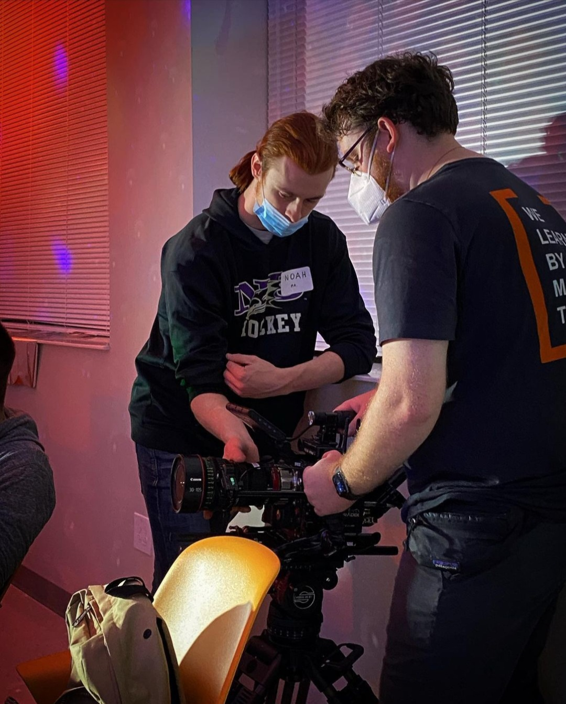
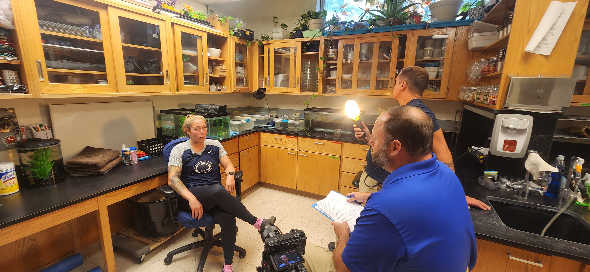

Wintergreen Media at a Behrend Athletics Banquet in
2020.My film Blissful in the green screen room.Me filming a red eared slider turtle for Pennsylvania Sea Grant

Me on the left assisting with the focus on a RED Camera.Me shooting Narrow-leaved Cattail for Pennsylvania Sea Grant

Shooting in Dr. Lynne Beaty's office.